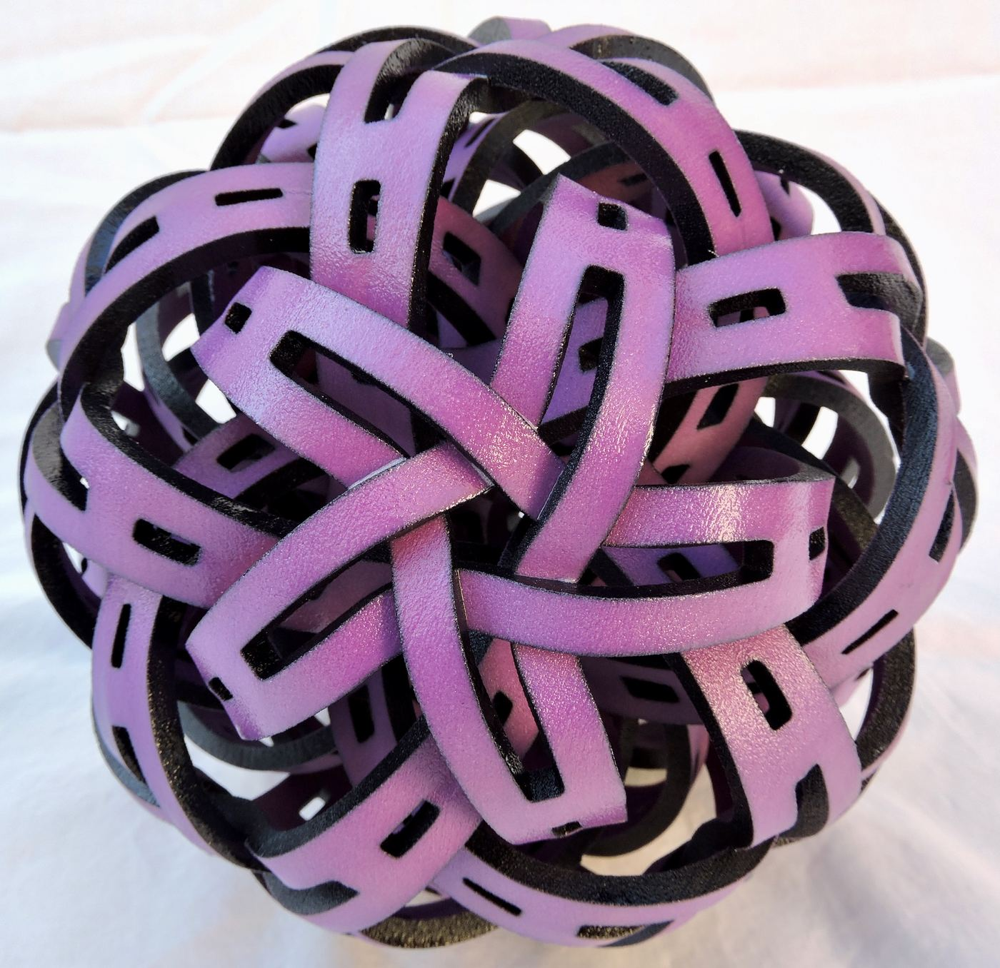

Geometry, topology, algorithms, and fabrication
I use mathematical models, CAD tools, digital fabrication, and hand finishing to produce sculpture, lighting, and other visual work.
Artist Statement
I explore ways in which advanced mathematics can be used to produce art. The results are sometimes precise, pre-planned shapes, but often they are things that have evolved from the mathematics in ways I could not exactly predict, imitating nature.
My design process typically begins with a mathematical model or algorithm that guides the construction of a physical object. That model is translated into CAD tools where scripted and hand-built elements can be combined, fabricated, and then often finished by more traditional techniques.

Featured Works
A small selection from a larger body of work in sculpture, lighting, and 2D pieces.


Selected Exhibition History
Recent exhibitions include Intersections: Math, Art, Truth, Humanity in 2025, Seeing the Unseen: Math and Art in 2024, and Austria’s Greatest Coral Reef in 2023.